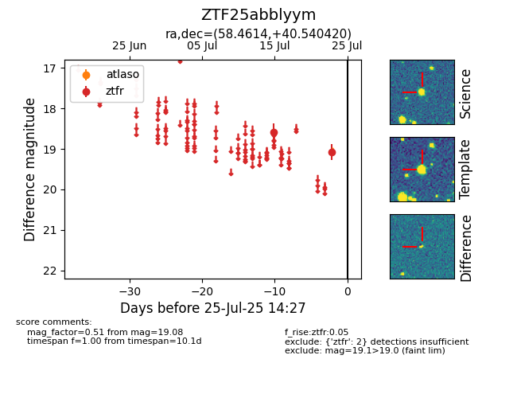

Target ZTF25abblyym at 2025-07-25 14:27, see:
FINK: fink-portal.org/ZTF25abblyym
Lasair: lasair-ztf.lsst.ac.uk/objects/ZTF25abblyym
ALeRCE: alerce.online/object/ZTF25abblyym
alt names
ZTF25abblyym (ztf,fink)
coordinates:
equatorial (ra, dec) = (58.4614,+40.54042)
galactic (l, b) = (156.4137,-10.18429)
photometry
last ztfr=19.08
2 ztfr detections
